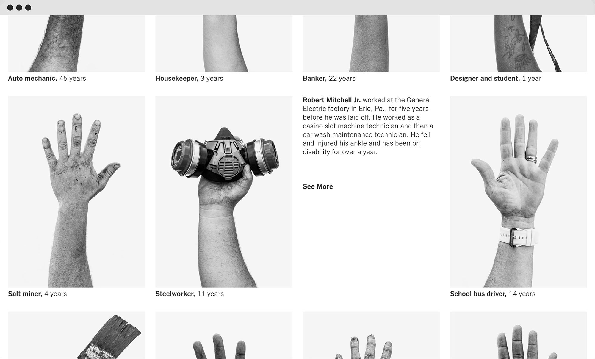
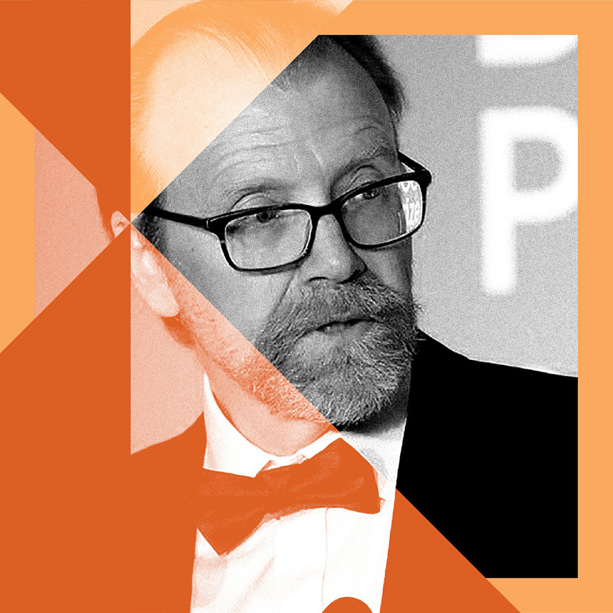
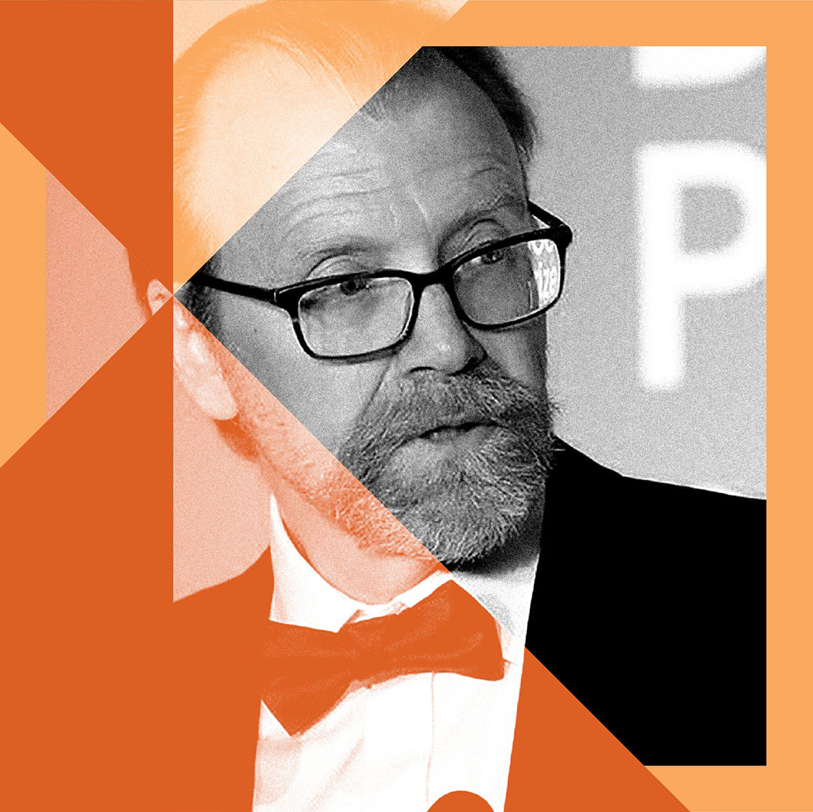

NYT Opinion Design
Fellowship
This past year I had the opportunity to join the 2020-2021 Fellowship class at The New York Times. As the Opinion Design fellow, I was lucky enough to produce work in a variety of mediums and disciplines. What follows is a collection of this work, from digital design and coding, to illustration and art direction. Over the past 9 months I have learned immensely not only from the other talented designers on my team but from all of the editors, writers and thinkers I get to collaborate with daily.
A Brief Guide to 21st Century Blackface
Design & Front End
Development

Building off of the vision and writing of Aisha Harris, I designed and coded the online experience for A Brief Guide to 21st-Century Blackface. It centers around a cinematic opener where readers are confronted with the scale & extremity of contemporary instances of blackface. I also incorporated subtle animation & design touches into section breaks, footnotes, and pull quotes to create a smooth experience for the reader and supplement their understanding of the piece.
The Hands of Labor
Design & Front End
Development
Tasked with the digital set up of a beautiful collection of photographs by Damon Winter, I designed and coded The Hands of Labor to offer readers the chance to explore the series themselves. Subtly framed by background details, these portraits can be appreciated individually for their texture or as a group, drawing unexpected parallels and juxtapositions.



Helping Kids is a Very Good Idea
Illustration
Occasionally, when a piece lands on my schedule with a particularly tight turnaround and a conceptual bent, I will illustrate its top art.

Inflation Isn’t Lurking Around the Corner. This Isn’t the 1970s

Now Social Media Grows a Conscience?
This Senator Has Got the Math Wrong About a $15 Minimum Wage

Don’t Let QAnon Bully Congress
Series Art
Design & Illustration
When new podcasts were started by the Opinion department, or existing teams were looking to differentiate their content, I helped to develop consistent visual languages for promoting these series. As I end up producing multiple of these thumbnails a week, it was important to land on a direction that is distinguishable while remaining easy to replicate and legible at multiple scales and crops.
Sway


Opinion Video


The Ezra Klein Show
 



Ease Up On The Executive Actions, Joe
Visual Annotations
Illustration
Building off of a visual language developed by my colleagues, I produced illustrations to accompany pieces by The New York Times Editorial Board.


Desperate Times, Creative Measures
The First Step Towards Unity is Honesty

What Happens When You Click ‘Agree’?


Governors are Easing Restrictions at
Exactly the Wrong Time
Secretary of State Mike Pompeo Leaves
No Bridges Unburned
Additional Links
Design, Digital Production
Love Letters to Small Businesses
Art Direction, Design, Front End Development
How Covid-19’s Social Effects Hurt Girls in Kenya
Design, Front End Development
Your Dog Had the Best Year Ever
Illustration
Graphic Series On How the Election Could Go Wrong
Illustration